Economize o tempo de preparação
Comece por um material sólido, em vez de montar cada aula do zero.
HISTÓRIA ENSINA COLEÇÕES DE HISTÓRIA DO BRASIL E HISTÓRIA GERAL
Aulas editáveis, stickynotes e listas com gabarito. Escolha um período da História do Brasil ou acompanhe a chegada das novas coleções de História Geral.
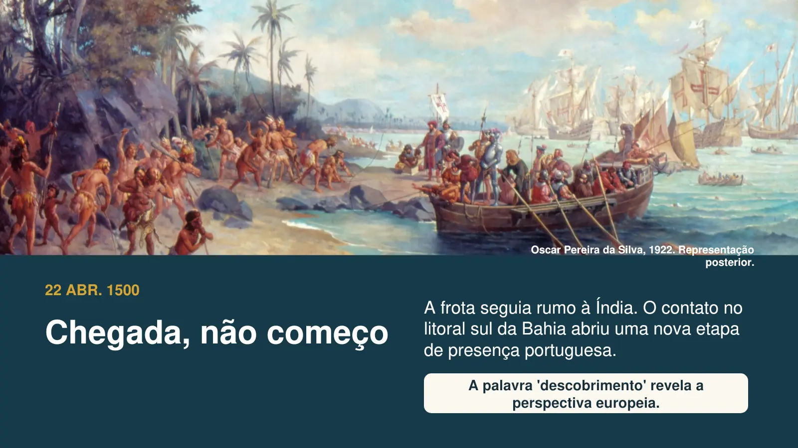
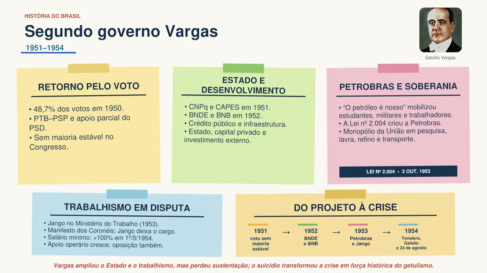
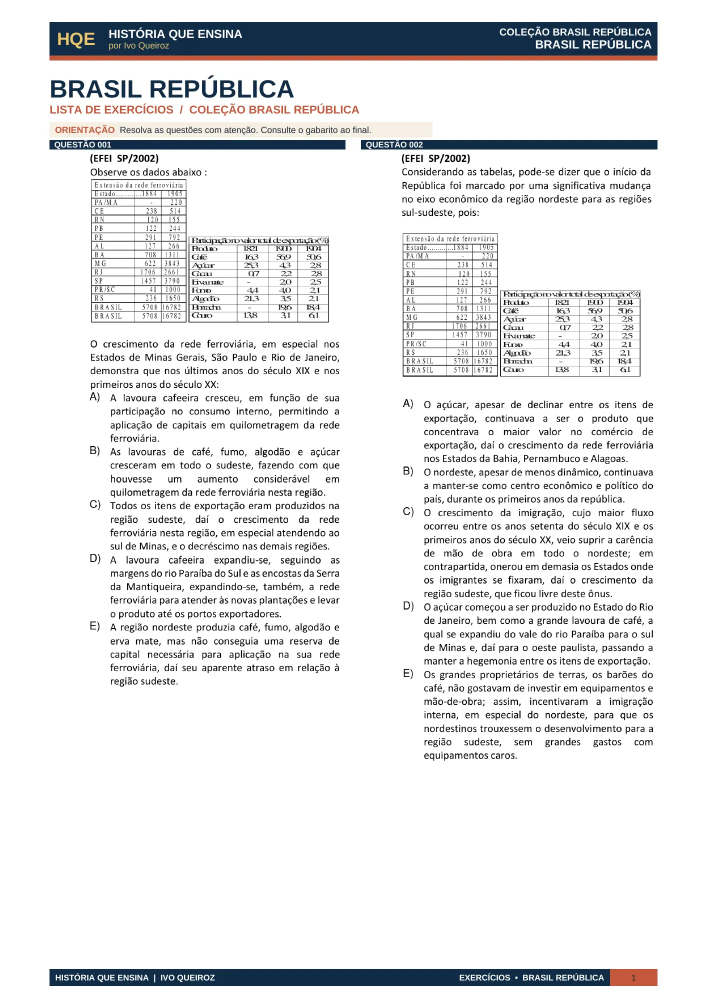
MATERIAL PARA A VIDA REAL
História do Brasil e História Antiga já estão disponíveis. As demais coleções de História Geral estão em preparação.
Comece por um material sólido, em vez de montar cada aula do zero.
Tópicos claros, boa leitura e imagens históricas escolhidas para a sala.
Apresentações, stickynotes e exercícios seguem a mesma linha didática.
Uma base visual consistente, editável e pronta para cada turma.
Materiais organizados para você conduzir a aula e apoiar a compreensão da turma.
HISTÓRIA DO BRASIL · DISPONÍVEL
Escolha Colônia, Império ou República. O pacote completo reúne as três coleções.
Material para professores de História do Ensino Médio, com aulas e slides editáveis sobre os principais conteúdos do Brasil Colonial.
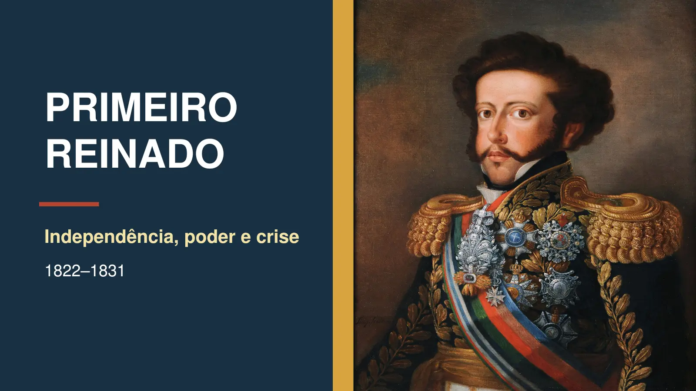
Material para professores de História do Ensino Médio, com slides editáveis sobre Primeiro Reinado, Período Regencial e Segundo Reinado.
Material para professores de História do Ensino Médio, com aulas e slides editáveis sobre a História Republicana brasileira.
AS TRÊS COLEÇÕES JUNTAS
As três coleções reunidas com materiais editáveis, stickynotes, exercícios e mais de 140 mapas mentais de História do Brasil e História Geral.
História do Brasil e História Geral
NOVA LINHA · HISTÓRIA GERAL
História Antiga já está disponível, com amostras reais para explorar. Imagens e links de pagamento das demais épocas serão acrescentados quando os pacotes forem finalizados.
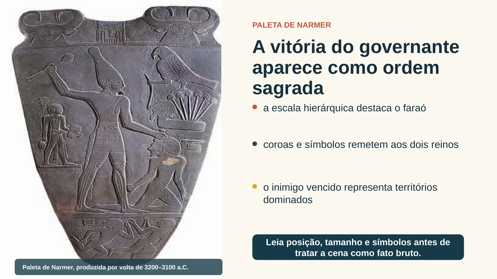
Das primeiras civilizações ao mundo clássico
Egito, Mesopotâmia, Grécia e outros povos da Antiguidade em aulas, revisão visual e exercícios.
Aulas editáveis · Stickynotes · Listas com gabarito
Escolher este pacote Ver amostras de História AntigaSociedades e culturas medievais
Transformações políticas, trabalho, religião e circulação de saberes ao longo da Idade Média.
Aulas editáveis · Stickynotes · Listas com gabarito
Mundos conectados, séculos XV a XVIII
Expansões marítimas, colonização, disputas de poder e mudanças culturais da época moderna.
Aulas editáveis · Stickynotes · Listas com gabarito
Revoluções e mundo contemporâneo
Revoluções, industrialização, conflitos e movimentos sociais até o tempo presente.
Aulas editáveis · Stickynotes · Listas com gabarito
História Antiga, Idade Média, História Moderna e História Contemporânea em um só pacote, com aulas editáveis, stickynotes e listas com gabarito.
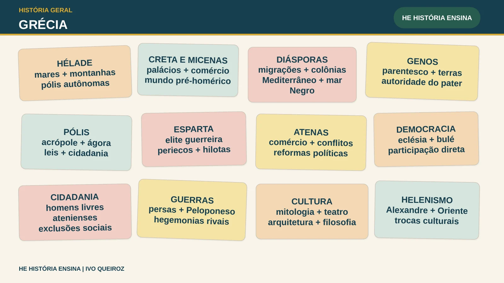
VEJA POR DENTRO
Escolha Brasil ou Geral, depois abra uma amostra. Os exemplos de História Antiga vêm das aulas e dos stickynotes originais.
Telas reais das coleções Brasil Colônia, Brasil Império e Brasil República, com hierarquia clara, imagens históricas e leitura confortável.
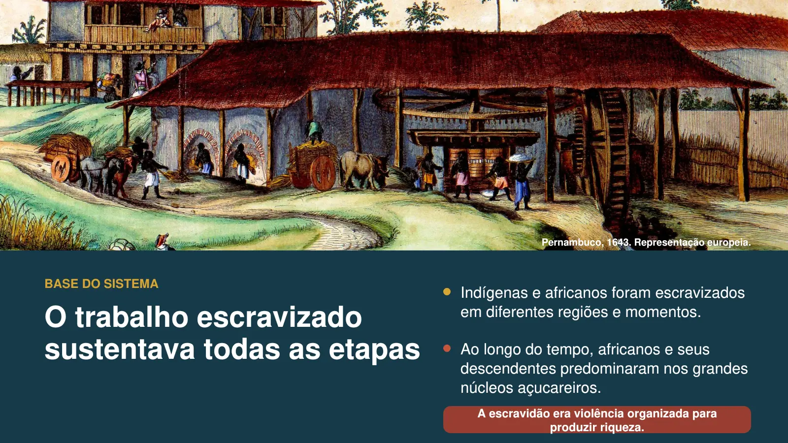
Brasil ColôniaA base do sistema açucareiroAula Economia Açucareira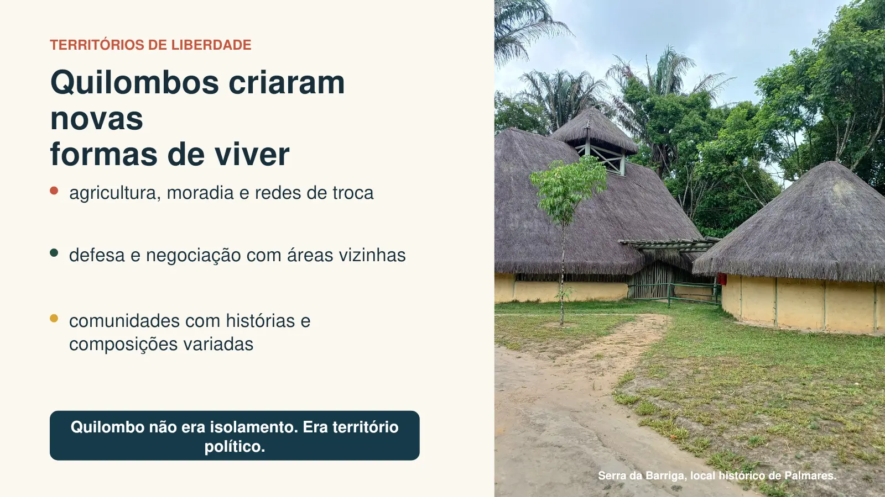
Brasil ColôniaQuilombos e territórios de liberdadeAula Escravidão e Resistência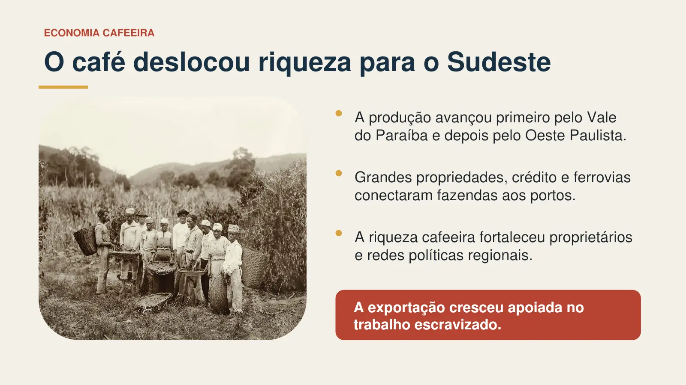
Brasil ImpérioEconomia cafeeiraAula Segundo Reinado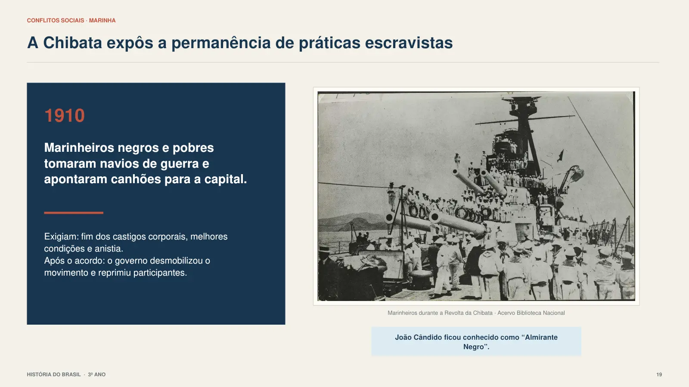
Brasil RepúblicaRevolta da ChibataAula Primeira República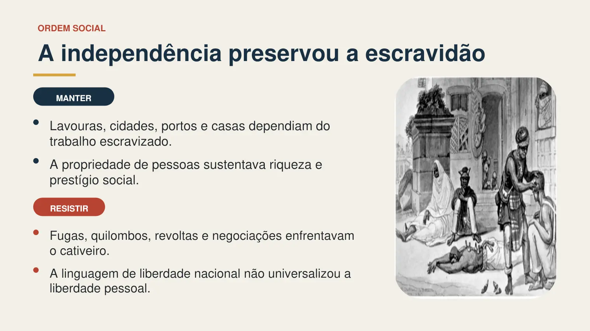
Brasil ImpérioIndependência e ordem socialAula Primeiro ReinadoExemplos reais de resumos em uma página, com conceitos, relações e datas organizados para consulta rápida.
Páginas reais da lista Brasil República, com modelo próprio, questões selecionadas e recursos visuais preservados no enquadramento.
O QUE VOCÊ RECEBE
Explicar, revisar e praticar com a mesma organização visual.
Aulas editáveis, legíveis no projetor e apoiadas por imagens históricas.
Sínteses em uma página para retomar conceitos, relações e datas.
Questões selecionadas, diagramação própria e gabarito incluído.
COMO FUNCIONA
Um processo simples para você começar a usar os materiais assim que a compra for confirmada.
Selecione um pacote de História do Brasil ou História Antiga. Os demais períodos de História Geral virão depois.
A Hotmart libera as instruções de acesso após a confirmação.
Edite os arquivos e adapte o material à sua realidade.
Projete, imprima ou estude no dispositivo que preferir.
ANTES DE ESCOLHER
Informações diretas sobre conteúdo, formatos e acesso.
Brasil Colônia, Brasil Império, Brasil República, História do Brasil Completa e História Antiga. Idade Média, História Moderna, História Contemporânea e História Geral Completa estão em preparação.
Os pacotes disponíveis incluem apresentações e stickynotes editáveis, além de listas com gabarito. Essa também é a organização prevista para os demais períodos de História Geral.
História do Brasil Completa reúne Colônia, Império e República, com o bônus de mais de 140 mapas mentais. História Geral Completa reunirá Antiga, Média, Moderna e Contemporânea quando a coleção estiver concluída.
Após a confirmação da compra, a Hotmart enviará as instruções de acesso ao conteúdo.
HISTÓRIA ENSINA
Conheça os pacotes, veja as amostras reais e escolha o material para sua próxima aula.
Explorar as coleções